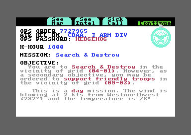
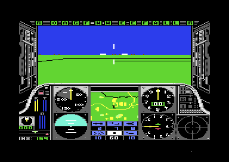

01 · The game
An attack helicopter in five theatres
You fly an AH-64 Apache for the US Army. You start in training in the USA, then move on to Southeast Asia, Central America, the Middle East and Western Europe.

The briefing: a primary and a secondary target, and the enemy's strength.

The cockpit. Above is the 3D view, below are the instruments and the CRT in the middle.
Each mission has two targets, a primary and a secondary. Before take-off you arm the helicopter with Sidewinder missiles, FFAR rockets, Hellfire missiles, cannon rounds, chaff and flares. You start the two engines, engage the rotor and raise the collective, the lever that sets how hard the rotor lifts. You find the targets on the map, destroy what you can and fly home to land at a friendly base. After landing, a debriefing scores the mission and may award a medal or a promotion. Your pilot is saved to disk between missions in a roster of up to eight.
Damage comes in fourteen kinds, each with a lamp along the top of the canopy. A hit can stop an engine, blind the gunsight or leak fuel. A wrecked helicopter or a dead pilot ends the career.
02 · The world in wireframe
The 3D world is made of wireframe shapes
The tanks, missile launchers, bunkers, bases and hills in the 3D view are all wireframes. Each is one record of a few dozen bytes in the theatre's terrain file.
A shape's record starts with how many points it has and their numbers ($1E9F on). Then come its faces, five bytes each, a colour number and its edges. An edge names two faces and two points, or a single point drawn as a dot. A flat shape has no faces, so all its edges are always drawn. The hills are the only shapes whose faces matter for more than drawing. The routine project ($894A) sets a flag when a hill's face turns towards the eye from inside the hill, which means the helicopter has flown into it. The main loop then ends the flight as a crash ($31F8).
Most things in the world have two shapes, a near view and a far one. A hill seen from far away is only its ridge lines, and a base is only its outline. Each of the 33 kinds of terrain lists a fixed object (a hill, or nothing) and up to eight switchable ones. A table at $E200 holds a byte for each square of the map, and each of its bits switches one of those objects on. A shape stored from $24E3 on can be locked as a target, and the byte after the shape names it. That byte plus 11 is the number of the message the CRT prints, so the shape at $27BE prints "T-72".
03 · Music: the title
Music: the Ride of the Valkyries
The title plays the opening of Wagner's Ride of the Valkyries while the helicopter rises over the hills. It is the only music in the game.
The game's own player, tune_play ($8E89), run on the title's bytes by the site's copy of the 6502, the C64's processor. The title calls it once a frame from a raster interrupt, code that the video chip starts when it reaches a chosen line of the screen. A frame is one picture on the television, 50 a second in Europe. The notes go through the site's model of the SID, the C64's sound chip. Its three streams are set back to where they start when the file is loaded: $9117, $91C7 and $95D1. A test beside the page runs the same calls on the title's whole memory and compares every write.
Each voice's stream is a note number and a length, two bytes a note. $80 is a rest and $81 the end. The length is multiplied by the tempo: 2 frames a unit on a PAL machine, the European C64 with 50 frames a second, and 3 on an NTSC machine, the American one with 60 (tempo_by_tv, $8530). A unit therefore lasts a twenty-fifth of a second on PAL and a twentieth on NTSC, so the tune plays a little slower in America. Each note number picks the note's frequency for the SID from two tables, one for the low byte and one for the high ($9006, $9082). The tables have 16 entries to an octave: 12 notes, then 4 zeros. The table's values are those of an NTSC machine, so on a PAL machine every note sounds a little flat.
The first voice plays a pulse wave and the other two a sawtooth (tune_waves, $9003). The player ends the tune when any voice reads $81. A key pressed during the tune skips it.
04 · Sound: the effects
Sound: ten effects from one small table
Every sound in a flight but the rotor and the engines is one of ten effects. Each is a list of values to write into the SID's registers, the sound chip's settings, and the frame on which to write each one.
The game's own effect player, sound_step ($9A39), run once a frame on the flight's bytes by the site's copy of the 6502, as the flight's raster interrupt calls it, after sound_start ($9AAC) as the game starts each effect. It plays through the site's model of the SID. The test beside the page compares every write with the same calls on the flight's whole memory.
All ten effects sit in one page of 256 bytes, so each one's address is a single byte (sound_effects, $EC00). An effect's entries are three bytes: the frame it is due on, a SID register and the value to write. A frame with bit 7 set starts a slide instead: from then on, each frame adds a step to a register. The slide's register is the low three bits of its start value, so a slide can only reach voice 1 and the first byte of voice 2. Effect 0 is never asked for by any of the flight's calls.
Effect 9, an engine's starter, is effect 0 with its slides going the other way. Its first entry names register $50, where effect 0's names register 1. The SID repeats its registers every 32 bytes, so the write lands on register 16, the low byte of voice 3's pulse width.
Under the effects, the main loop keeps two voices going all through the flight ($3BBD). Voice 2's pitch is the rotor's speed, and its pulse width follows the height. Voice 3 is the engines' whine.
05 · The cockpit
Two pictures, one screen
The cockpit is two pictures, each a bitmap that sets every pixel, in two different 16 KB banks of memory. The video chip can see only one bank at a time, and a raster interrupt switches it from one bank to the other a third of the way down the screen.
One whole frame of the game in flight, recorded in the emulator, the program that plays the part of a C64 (every write to the video chip with the line it came on, and the memory the chip reads), and drawn here by the site's model of the video chip. 104,447 of its 104,448 pixels match the emulator's own picture of the same frame. The one that differs is in the border.
The window at the top is rows 0-12 of a bitmap at $4000 or $6000, in the video chip's bank 1, with its colours at $7C00. The panel below is rows 13-24 of a bitmap at $C000 or $E000, in bank 3, with its colours at $EC00. The interrupt at line $9A, line 154 (irq_split, $94B8), moves the chip to bank 3 for the panel. The one at line $FB, line 251 (irq_bottom, $9206), comes below the picture. It moves the chip back and shows whichever window was finished last.
Both halves are double-buffered: each has two copies, one on screen and one being drawn. The engine draws the next view into the window bitmap the chip is not showing (draw_view, $8451), then swaps the two. The swap is a write to the chip's register $D018, which says where in the bank the picture is, and $910C holds its four settings. The rows of each 8 KB bitmap that never reach the screen hold other things: sprites, the records of the 128 units (the tanks, launchers and bases on the ground, and the moving things in the air) at $5100, the messages, the map's font and much of the engine's code.
On a Commodore 128, whose processor can run at twice the speed, the engine switches the processor to 2 MHz below the picture and back to 1 MHz at its top (engine_on, $9110; irq_c128, $948F). The fast part is the time the video chip is not reading the screen.
06 · The map
The theatre on one screen
Pressing Z shows the big map: the theatre's terrain in characters, the units you have seen, and the waypoint.
One frame of the big map in Western Europe, recorded in the emulator and drawn by the site's model of the video chip. 25 of its 104,448 pixels differ from the emulator's picture, all on the sprites, the small movable pictures the chip draws over the screen. The Maps tab draws all five theatres.
A theatre is 16 by 16 squares, one byte each, and each byte is the number of one of 33 terrains (theatre_map, $1A86). The big map shows the middle 12 by 12 (draw_map, $9685). The map is drawn in characters, as text is, from a font at $C800 whose characters are small pictures of terrain. Each square is three characters wide and two high. A terrain's six characters follow each other in the font, from character 58 on. Their colours come from a table by character code ($E33C).
A unit appears on the map only once the helicopter has seen it. Seeing it sets bit 4 of the unit's type byte ($5300). Its character is drawn in its square: friendly units in white, targets in one colour and other enemies in another.
07 · Flying it
Controls
The joystick is the cyclic, the stick that tilts the rotor to fly the helicopter forward, back or sideways. The keyboard does everything else.
| Key | What it does |
|---|
| Joystick, port 2 | The cyclic: forward, back and the two sides (joystick, $E40C) |
| Fire | The chosen weapon, with the CRT on the target view ($3D60) |
| F1, F3, F5, F7 | The collective up 4, up 1, down 1 or down 4, from 0 to 42 ($3383) |
| 1, 2 | Start or stop engine 1 or engine 2 ($3406) |
| 3 | Engage or free the rotor's clutch |
| 4, 5, 6, 7 | Choose the Sidewinders, the FFARs, the Hellfires or the cannon ($348D) |
| 9, minus | Chaff, a flare ($34FC) |
| RETURN | Stop turning |
| SPACE | Step the CRT on to its next display (crt_next, $9CCD) |
| Right SHIFT | Ask for the next target |
| HOME, £, DEL | Look ahead, left, right |
| Z | The big map; ← on it switches fast motion on and off |
| C=, left SHIFT | The stores and the damage pictures, loaded from the disk |
| RUN/STOP | Pause |
| RUN/STOP and RESTORE | Abort the flight |
From the key handling in the main loop, $332E to $3500. The interrupt reads the keyboard once a frame (keyboard, $A8D8) and puts a newly pressed key in the keyboard buffer, where the main loop finds it.
The joystick routine keeps what it reads only if two timers are still running the way the code on side 1 of the disk left them. The timers are in CIA 2, one of the C64's two input and output chips. The routine compares the high bytes of timers A and B, and unless they are $7D to $80 apart, it throws away what it read ($E423). The Discoveries tab has the test.
08 · Weapons and hits
Each ground unit falls to one kind of missile
A missile of the wrong kind that hits a ground unit does nothing at all. The flight engine names one missile kind for each of the sixteen kinds of unit, and only the Hind falls to any missile.
| Unit kind | Destroyed by | Its own weapon | Radar |
|---|
Read from the flight's listing: the table at $B5A4 (1 the FFAR, 2 the Hellfire, 0 the Sidewinder) and each kind's attributes at $53A8 (bits 0-2 its weapon: 0 to 2 a gun whose reach is that number plus 1, times $800, half a map square; 3 and up a missile of that kind; bit 6 radar). A unit's kind is a number from 0 to 15 in bits 0-3 of its type byte. The names the CRT shows for units come from their shapes, not their kinds, so this table can only number the kinds.
The cannon works another way. Each shot takes a random fraction of the cannon's range and hits when that is beyond the target's distance. The range shrinks with a worse aim, a harder style of mission and a damaged gun ($3D60). The colour of the target box tells the pilot how good the shot is: the aim and the distance give a class from 0 to 3, which picks one of four colours ($3CB6, $53A4).
When an enemy shoots at the helicopter, hit_helicopter ($5AE5) decides whether it hits. First a random number from 0 to 15 is checked against the attacker's chance ($5ADD: 4 in 16, 8 in 16 or always, by the attacker). Then the pass counter, which goes up by one each time round the main loop, is checked: its lowest two bits, a number from 0 to 3, must be below zpa_4C. That variable is 0 in training, and on a mission it is the style of missions plus 1. So in training nothing ever hits. Of the shots that pass the first test, a quarter hit on regular missions, a half on volunteer missions and three quarters on volunteer hazardous duty. A hit sets one of the fourteen damage bits at random. More than 7 hits, less zpa_4C, stop both engines. The Discoveries tab lets you try the test.
09 · Eight programs
BASIC around a machine-code engine
The title, the front end, the debriefing and the base are BASIC programs. They call routines in a machine-code library through a table of jumps at $7500, one jump for each routine. Only the flight itself is machine code.
| Program | What it does | Source |
|---|
GUNSHIP | The title, the tune and the credits, then the library and the roster check | title, library |
BEGIN | The identity check, the roster, the duty and the briefing, the checklist and the arming | front |
6 | Side 2's loader: the flight's files, moved where the engine wants them | loader, helpers |
G2 and M | The flight: the BASIC that sets it up and the engine | flight |
B | The mission result summary | debrief |
E | The base: scores, medals, promotions, repairs, and the roster saved | base |
One program hands over to the next by printing a LOAD command on the screen, putting a RETURN in the keyboard buffer and ending with NEW, so BASIC loads it as if it had been typed.
The front end passes the mission to the flight in the cassette buffer at $033C, memory the C64 keeps for tape loading and Gunship borrows. G2 copies the mission into the engine's variables. They wait at $3F00 until the engine swaps them into zero page, the first 256 bytes of memory, which the processor reaches fastest (swap_zp, $919B). The last file G2 loads, AWH, is a few bytes that land on the processor's stack, where it keeps the address to return to after a routine. So when the load is over, it returns into the engine at $3100 instead of into BASIC (flight_start). When the flight ends, the engine drops that return and goes back to G2, and the debriefing reads the flight's results from $3F00.